To calibrate my camera, I first printed out a page with six 4x4 ArUco tags and took around 40 images of the page from different angles. Then, I used the cv2 library to detect the corners of the tags in each image and calibrate the intrinsics and distortion coefficients for my camera (focal length, optical center, etc).
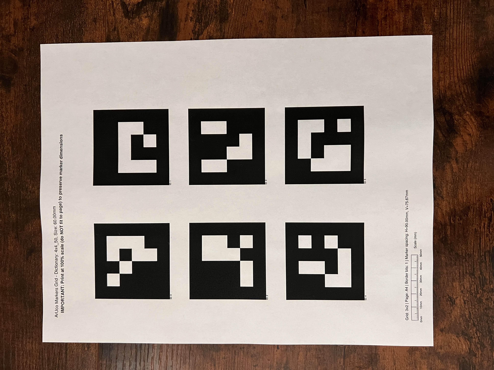
I then cut out one of the AruCo tags, placed it next to my chosen object (a Swedish horse) and took around 50 images of the object from different angles. I used these images to estimate the position and orientation (camera pose) of each image of my object using the Perspective-n-Point (PnP) problem. The goal of this method is to find the extrinsic camera matrix, which models how a camera projects 3D world coordinates into a 2D image. The cv2.PnP() function returns a rotation and translation vector, which compose the camera extrinsic matrix.
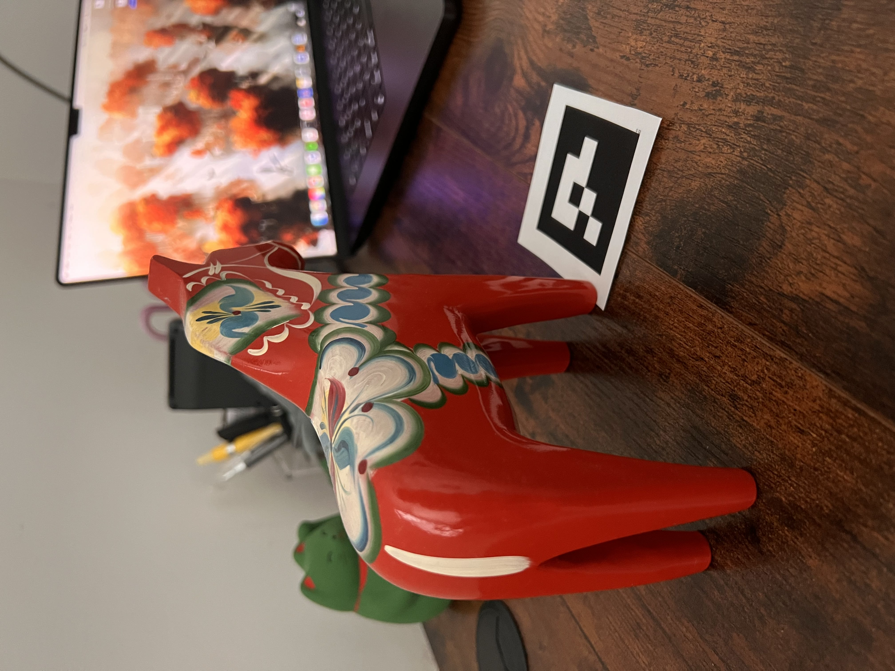
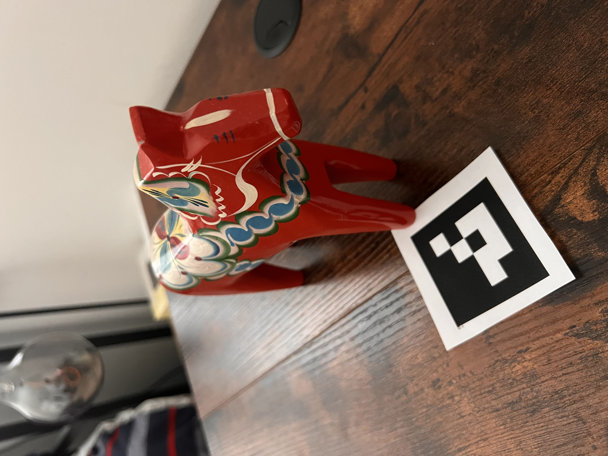
To visualize my camera pose estimates, I used viser to visualize my camera frustums (basically the camera's field of view).
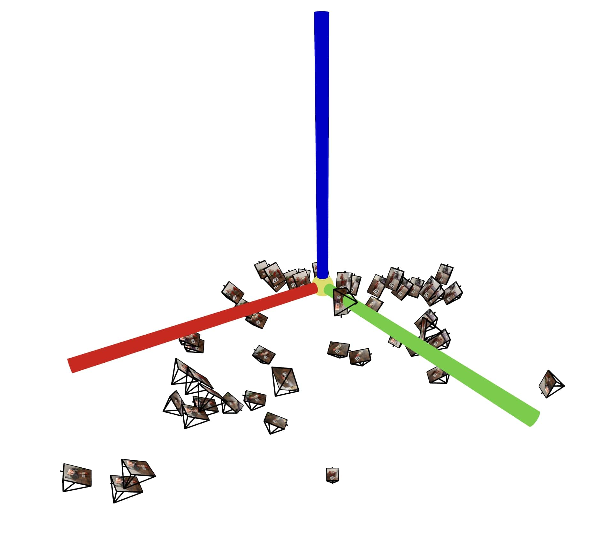
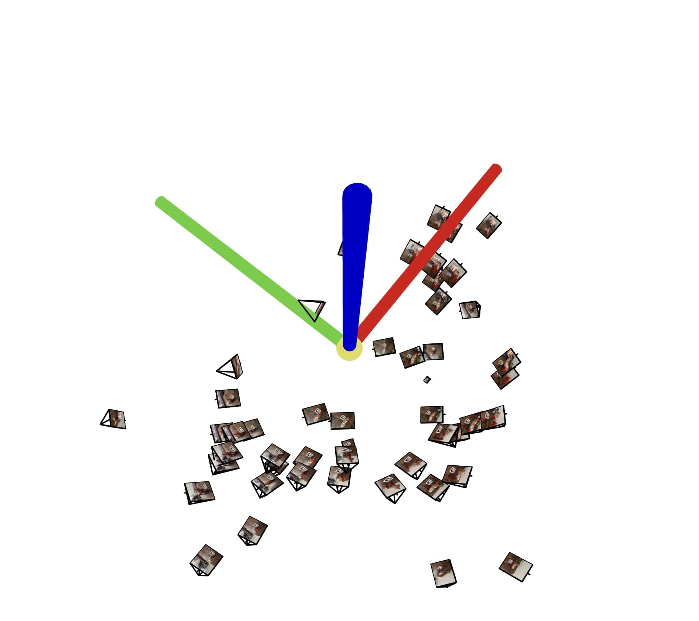
Finally, I removed lens distortion from my 50 object images by using cv2's undistort function, and created my own dataset.
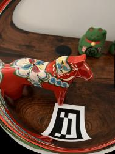
As a percursor to doing NeRF in 3D, I implemented a Neural Field (since radiance does not exist in 2D), which maps 2D coordinates to a 3D RGB representation. The architecture of the Neural Field is essentially a Multilayer Perceptron (MLP) as follows:
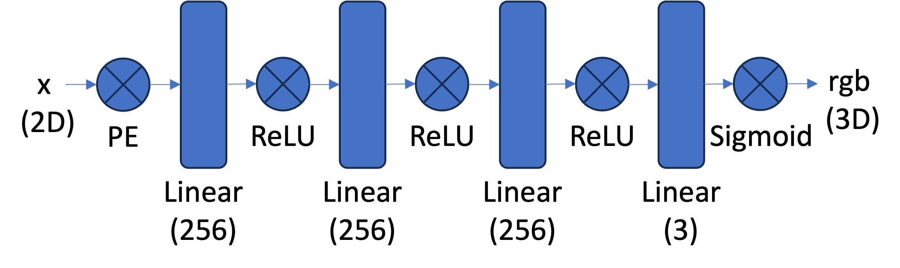
Where the PE layer is a positional encoding that applies several sinusoidal functions to the input. This is used to map continuous input coordinates to a higher dimensional space such that the MLP will be able to represent the high frequency information present in the original image.
Small note: Since I was working on my own computer, I randomly sampled N pixels from the image at every iteration to not overload the GPU. As a result, if you zoom in really close into the Iter 2000 image, you can see little black dots where the image was not yet sampled.
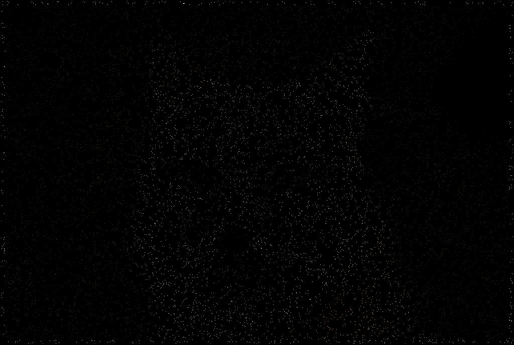
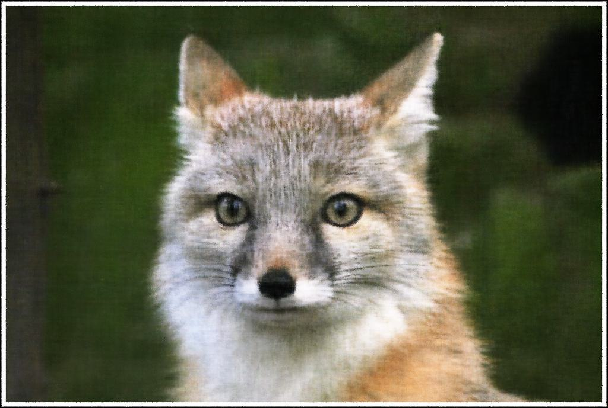
The reconstruction from iterations 1000 and on gets smoother, but the low frequency information was reconstructed between iterations 500-1000. The next image I used was larger than the fox image, so I sampled more points per iteration.
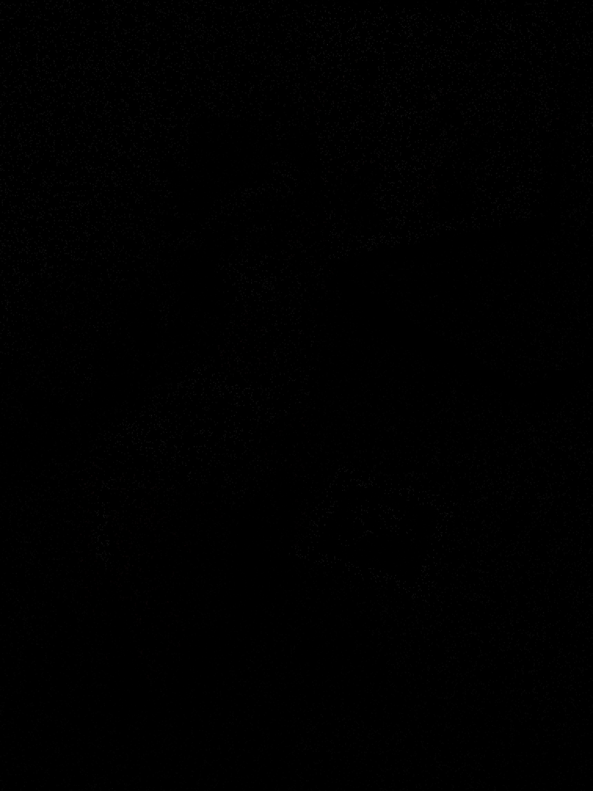
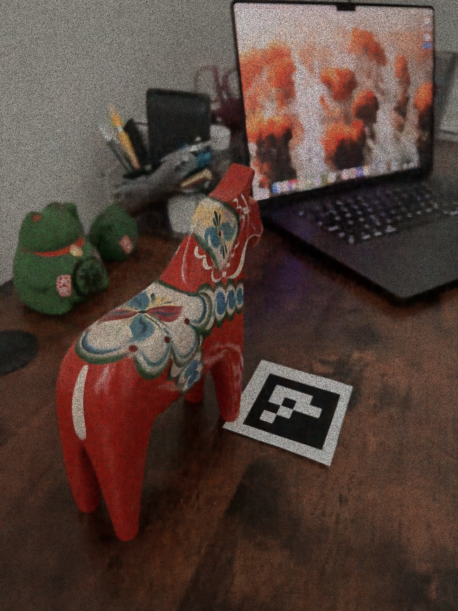
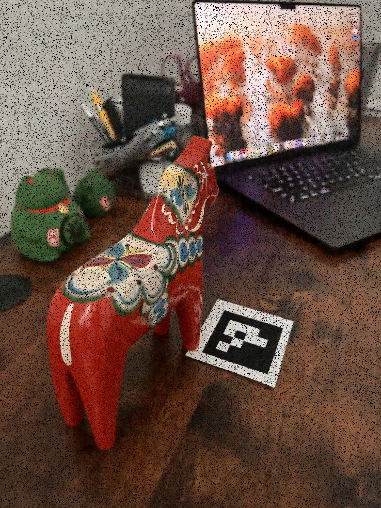
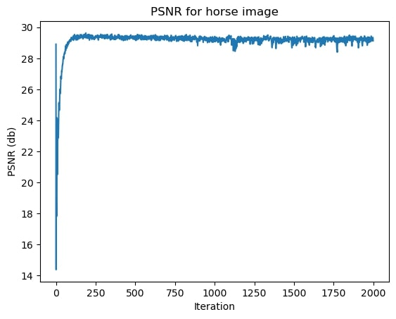
I experimented with some of the parameters such as L (highest frequency level) and the width of the architecture (number of features in each linear layer). Lower values of L resulted in blurrier images, where the high frequency information was lost. Smaller architecture width caused granier images, meaning that a larger width results in a smoother image.
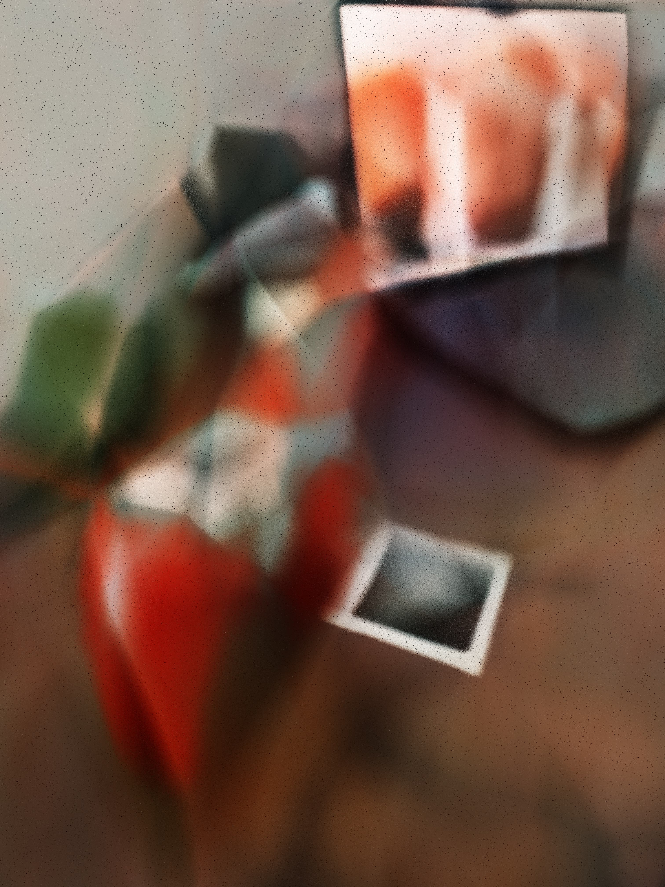
To render a 3D radiance scene from several cameras, we must first be able to translate between pixel → camera → world for every camera in the scene.
Camera → world requires a camera to world transformation matrix, which consists of a rotation and translation component, and we also need non-homogenous xyz camera coordinates (4D). We then do a matrix multiplication of the c2w matrix multiplied by the xyz camera coordinates (x_c) to get xyz world coordinates (transformed back into homogenous coordinates). For NeRF training, I implemented a camera to world transformation function that handled batch sizes, meaning that broadcasting needed to be correct if a stack of c2ws and x_cs were passed into the function. For example, pytorch usually defines vectors in row form rather than columns, so instead of multiplying c2w @ x_c, I had to do (c2w @ x_c.T).T.
Pixel → camera needs the intrinsic matrix K (encodes the camera's focal length and principal point) and 3D points in the pixel space (2D pixel point that is converted to non-homogenous coordinates). K transforms camera → pixel coordinates, so to go from pixel → camera, we invert the K matrix and multiply by the 3D pixel points uv.
Pixel → ray To later obtain a final color for the NeRF image, we need to draw a ray from a pixel in the image. A ray can be defined by an origin point r_o and a direction r_d, where both are 3D points. r_o is just the translation vector from the given c2w matrix. But to get the direction vector r_d, we first use the previous two functions to go from a given pixel point uv → camera → world and get a 3D world coordinate. The world coordinate is then centered around the origin point (subtract r_o from the world coordinate) and normalized to get r_d.
Sampling rays from cameras helps render the 3D scene in NeRF. To sample N rays from different locations of different images, I first calculated the total number of pixels I had across all of my training images (training image vector was of size B x H x W x 3): P = batches * H * W. I then sampled N random integers in the range of (0, P) and extracted the index and pixel coordinates the integers corresponded to. Then, I used my pixel_to_ray function from part 2.1 to find the origin point and ray direction for each sampled ray. I also found the RGB pixel values corresponding to the points at the ray, which will be used for volume rendering and loss calculation later.
Sampling along the rays will be used for volumetric rendering later to determine the color of the 3D point in the object the ray represents. To create a set of uniformly spaced samples, I used t = torch.linspace(near, far, num_samples) where the length between each sample step_size = (far - near) / num_samples. To prevent overfitting, I added perturbations in the range of (0, step_size) to the generated samples t.
I then created a dataloader that included all of the above implementations as functions of the dataloader class. The dataloader then returned the origin and direction vectors of the sampled rays as well as the RGB pixel values corresponding to the locations from which the rays were drawn. The following is a visualization of 100 rays with 32 points sampled from each ray:
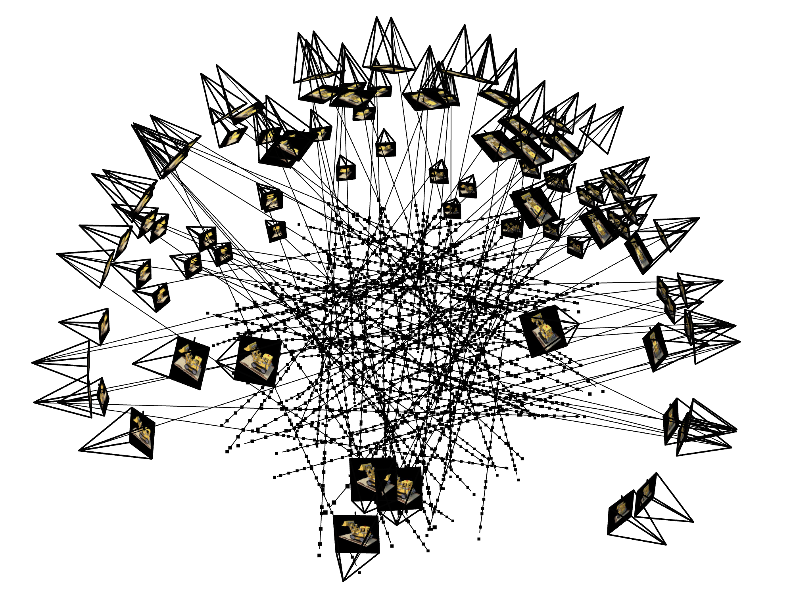
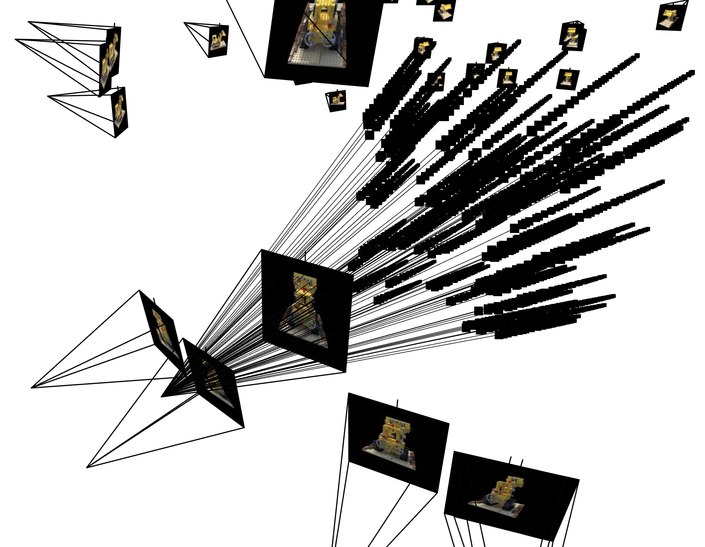
I implemented the NeRF architecture as depicted below. The inputs are 3D world coordinates and 3D direction vectors. Note that there are now two positional encodings: the positional encoding parameter L for the world coordinates is different than the L for the direction vectors (around L_coords=10, L_coords=4). The architecture here is much deeper than the MLP for the 2D image and it outputs a density scalar and RGB coordinates.

To determine the final color of the point in the 3D scene, I used the density and color outputs from the network, as well as the step_size (distance between sampled points along the ray). The resulting color is a summation of the product of (the probability of the point terminating at sample i) * (probability of not terminating before sample i) * (color of the pixel).
To train the NeRF, I first sampled N rays from all the cameras to get the origin + direction vectors and the RGB coordinates. Then, I sampled points along those rays and inputted the points and direction vectors into the model. I rendered the final colors using the density and RGBs outputted by the model and compared the final colors to the colors I got from sampling N rays. Then I zeroed out the optimizer gradients, backpropogated the loss, and stepped the optimizer. I repeated this process for validation without tracking the gradients.
On the tractor dataset from the original NeRF paper, I used the following parameters:
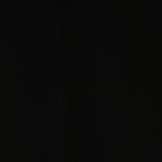
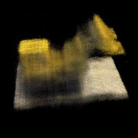
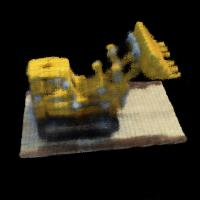
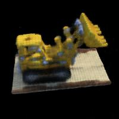
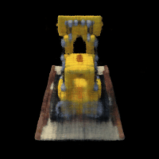
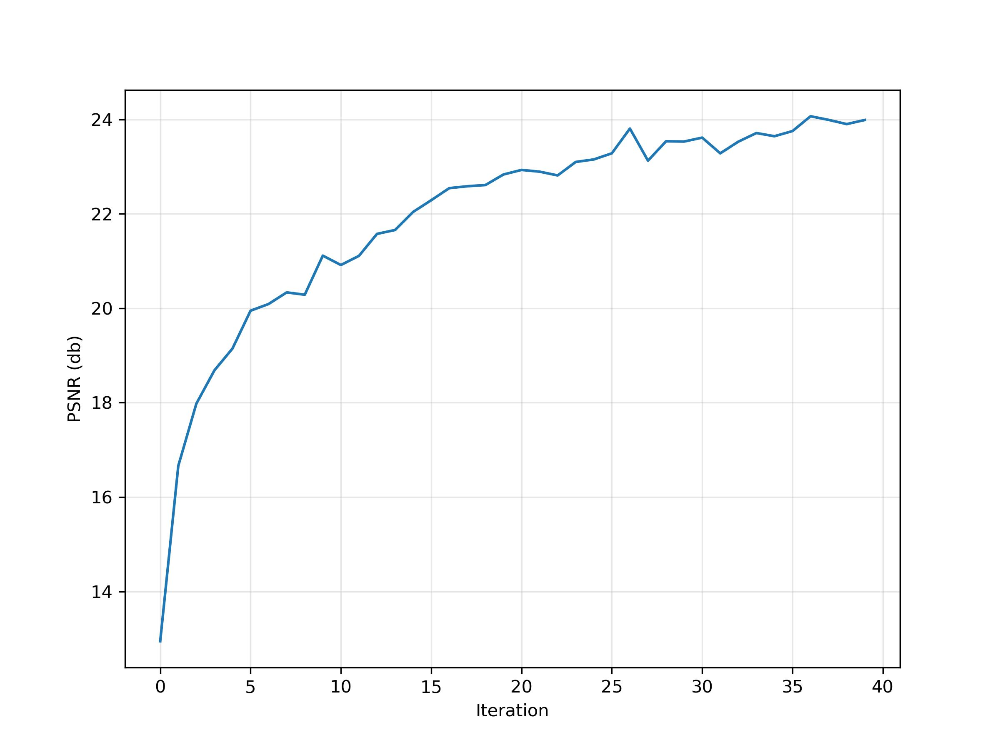
Increasing the number of points sampled along the ray and increasing the number of rays gave richer details about the tractor. However, it did increase the training time significantly. I noticed that increasing L_coord, L_ray, or layer_width didn't increase PSNR that much, so I mostly modified the ray sampling parameters. Increasing the number of iterations also allowed the model to become more "refined."
I also trained on the staff's "lafufu dataset" as a diagnostic, using the following parameters:
I decreased the number of rays and number of points along the ray to train faster since I only wanted to make sure that the results looked generally correct.
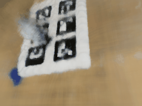
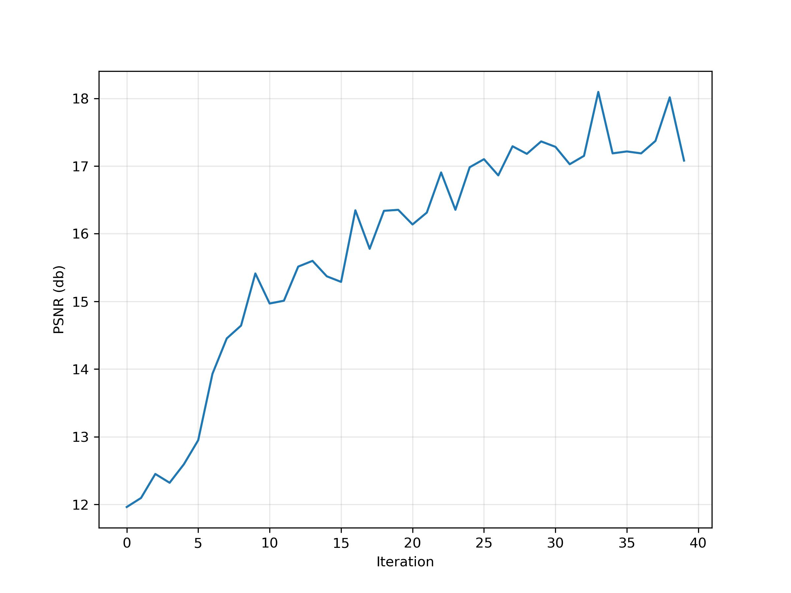
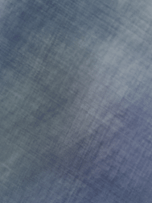
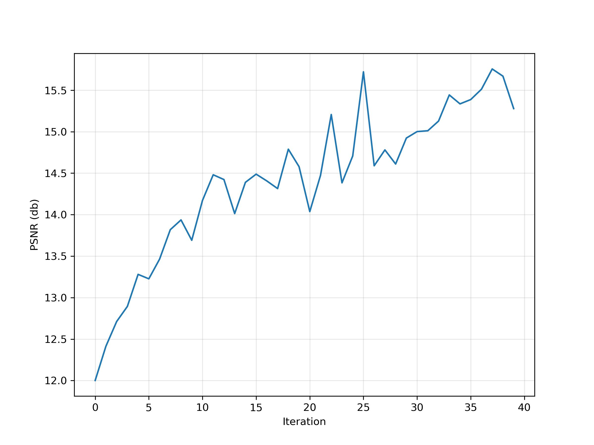
I tried many different values for the near and far parameters, but nothing helped. The PSNR remained around 9-10 dB. Increasing the number of rays and the points along the rays didn't help since my model didn't even capture the low frequency information of the scene. I also tried tuning the learning rate and increasing the number of iterations, but that also did not help.